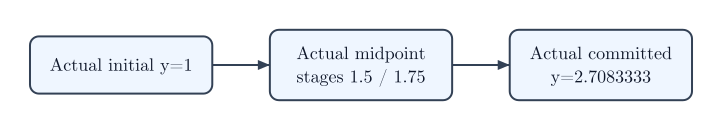
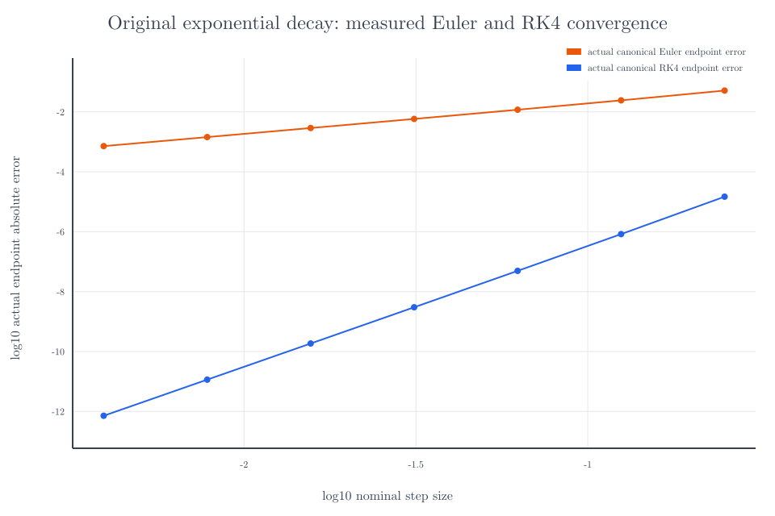
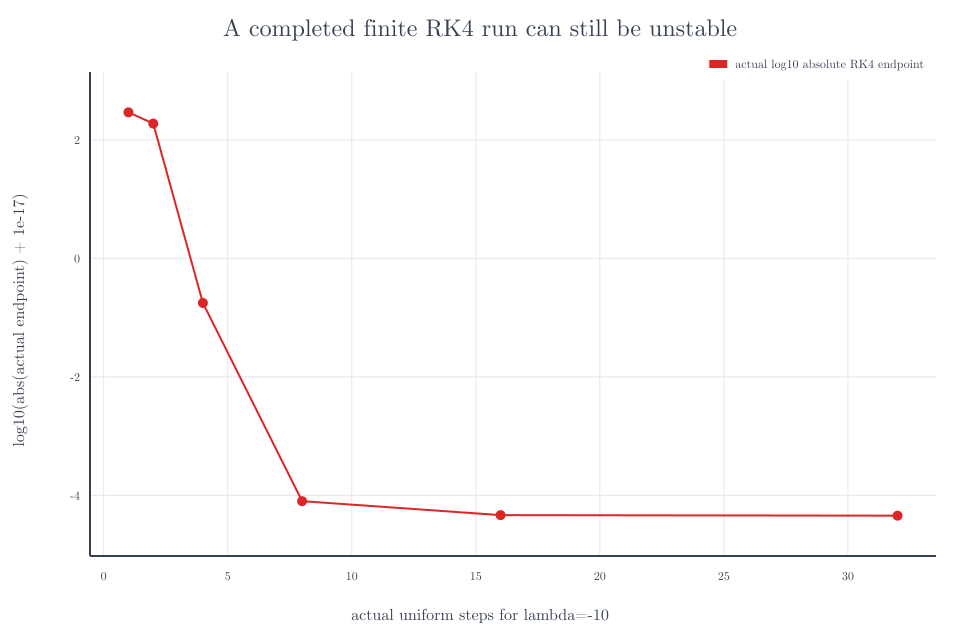
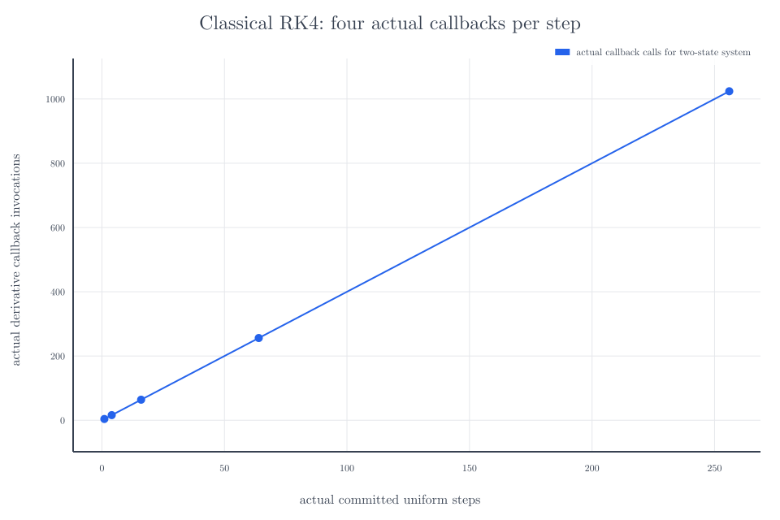

Classical RK4: actual four-stage states, convergence and stability
Abstract
Approximate an initial-value differential equation at discrete times with a known derivative-evaluation budget. The classical fourth-order method samples four derivative stages per step. Native histories now retain those exact callback inputs and outputs. The original decay/growth problems and Euler convergence comparison remain, with explicit malformed-derivative and stability controls.
Mechanism and mathematical scope
For state y at time t and step h, classical RK4 computes k1=f(t,y), k2=f(t+h/2,y+h*k1/2), k3=f(t+h/2,y+h*k2/2), k4=f(t+h,y+h*k3), then
Under smoothness and stability assumptions, global error is O(h4); halving h asymptotically reduces error by about 16. On y'=lambda*y the stability polynomial is R(z)=1+z+z2/2+z3/6+z4/24. Finite arithmetic and successful completion do not imply stability or small integration error.
A tiny actual producing history
The table and native concept diagram read the same producing execution. Every block below is a complete editable C++ program.
#include <dm/dm.hpp>
int main() {
namespace a = dm::algorithms;
namespace g = dm::graphics;
std::filesystem::create_directories("build");
auto t = a::runge_kutta4_trace([](double, const auto &y) {
return y;
}, {1}, 0, 1, 1);
const auto &s = t.steps[0];
std::print("| actual stage | queried time | state | derivative |\n| --- | ---: | ---: | ---: |\n| k1 | " "{} | {} | {} |\n| k2 | {} | {} | {} |\n| k3 | {} | {} | {} |\n| k4 | {} | {} | {} |\n",
s.time, s.before[0], s.k1[0], s.midpoint_time, s.second[0],
s.k2[0], s.midpoint_time, s.third[0], s.k3[0], s.endpoint_time,
s.fourth[0], s.k4[0]);
std::print("Actual committed value {}; actual callback calls {}.\n",
s.after[0], t.rhs_calls);
g::Diagram d(48, 1100);
d.node("n0", {0, 0}, std::format("Actual initial y={}", s.before[0]));
d.node("n1", {5, 0},
std::format("Actual midpoint stages {} / {}", s.k2[0], s.k3[0]));
d.node("n2", {10, 0}, std::format("Actual committed y={:.8g}", s.after[0]));
d.edge("n0", "n1").edge("n1", "n2");
d.save_svg("build/runge_kutta4_tiny.svg");
}| actual stage | queried time | state | derivative |
|---|---|---|---|
| k1 | 0 | 1 | 1 |
| k2 | 0.5 | 1.5 | 1.5 |
| k3 | 0.5 | 1.75 | 1.75 |
| k4 | 1 | 2.75 | 2.75 |
Actual committed value 2.708333333333333; actual callback calls 4.

The retained original experiment
#include <dm/dm.hpp>
int main() {
namespace a = dm::algorithms;
namespace g = dm::graphics;
std::filesystem::create_directories("build");
auto decay = [](double, const auto &y) {
return std::vector<double>{-y[0]};
};
auto growth = [](double, const auto &y) { return y; };
std::print("| actual uniform steps | native Euler endpoint error | native RK4 endpoint error | actual " "RK4 calls |\n| ---: | ---: | ---: | ---: |\n");
std::vector<double> x, e, r;
for (int steps : {4, 8, 16, 32, 64, 128, 256}) {
auto et = a::euler_method(decay, {1}, 0, 1, steps);
auto rt = a::runge_kutta4_run(decay, {1}, 0, 1, steps);
const auto ee =
std::abs(et.y.back()[0] - std::exp(-1.)), re =
std::abs(rt.solution.y.back()[0] - std::exp(-1.));
std::print("| {} | {} | {} | {} |\n", steps, ee, re, rt.rhs_calls);
x.push_back(std::log10(1. / steps));
e.push_back(std::log10(ee));
r.push_back(std::log10(re));
}
auto grow = a::runge_kutta4_run(growth, {1}, 0, 1, 10);
std::print("Original growth example, actual RK4 endpoint {}, analytic e {}, absolute error {}.\n",
grow.solution.y.back()[0], std::exp(1.),
std::abs(grow.solution.y.back()[0] - std::exp(1.)));
auto p = g::RPlot::create();
p.lines(x, e, "actual canonical Euler endpoint error", {234, 88, 12}).points(x, e, {234, 88, 12}, 4).lines(x, r, "actual canonical RK4 endpoint error", {37, 99, 235}).points(x, r, {37, 99, 235}, 4).title("Original exponential decay: measured Euler and RK4 convergence").x_label("log10 nominal step size").y_label("log10 actual endpoint absolute error");
p.save_svg("build/runge_kutta4_original.svg");
}| actual uniform steps | native Euler endpoint error | native RK4 endpoint error | actual RK4 calls |
|---|---|---|---|
| 4 | 0.051473191171442334 | 1.4758235306278067e-05 | 16 |
| 8 | 0.024270525365625684 | 8.307505093840817e-07 | 32 |
| 16 | 0.01180531071964952 | 4.9281128622347126e-08 | 64 |
| 32 | 0.005824151915125697 | 3.000808712627645e-09 | 128 |
| 64 | 0.002892916927534961 | 1.8512291699579464e-10 | 256 |
| 128 | 0.001441725249405168 | 1.1494971641212715e-11 | 512 |
| 256 | 0.0007196862799060955 | 7.159273174295322e-13 | 1024 |
Original growth example, actual RK4 endpoint 2.718279744135166, analytic e 2.718281828459045, absolute error 2.0843238792700447e-06.

Explicit controls
#include <dm/dm.hpp>
int main() {
namespace a = dm::algorithms;
namespace g = dm::graphics;
std::filesystem::create_directories("build");
auto f = [](double, const auto &y) {
return std::vector<double>{-10 * y[0]};
};
std::vector<double> x, y;
std::print("| actual steps on [0,1] | actual endpoint | analytic endpoint | actual calls |\n| ---: | " "---: | ---: | ---: |\n");
for (int steps : {1, 2, 4, 8, 16, 32}) {
auto t = a::runge_kutta4_run(f, {1}, 0, 1, steps);
std::print("| {} | {} | {} | {} |\n", steps, t.solution.y.back()[0],
std::exp(-10.), t.rhs_calls);
x.push_back(steps);
y.push_back(std::log10(std::abs(t.solution.y.back()[0]) + 1e-17));
}
bool shape = false, steps_bad = false;
try {
a::runge_kutta4([](double, const auto &) {
return std::vector<double>{};
}, {1}, 0, 1, 2);
} catch (const std::invalid_argument &) {
shape = true;
}
try {
a::runge_kutta4(f, {1}, 0, 1, 0);
} catch (const std::invalid_argument &) {
steps_bad = true;
}
std::print("Malformed derivative shape rejected: {}; zero steps rejected: {}.\n",
shape, steps_bad);
if (!shape || !steps_bad)
return 1;
auto p = g::RPlot::create();
p.lines(x, y, "actual log10 absolute RK4 endpoint", {220, 38, 38}).points(
x, y, {220, 38, 38}, 5).title("A completed finite RK4 run can still be unstable").x_label("actual uniform steps for lambda=-10").y_label("log10(abs(actual endpoint) + 1e-17)");
p.save_svg("build/runge_kutta4_controls.svg");
}| actual steps on [0,1] | actual endpoint | analytic endpoint | actual calls |
|---|---|---|---|
| 1 | 291 | 4.5399929762484854e-05 | 4 |
| 2 | 187.91840277777774 | 4.5399929762484854e-05 | 8 |
| 4 | 0.17679602280259132 | 4.5399929762484854e-05 | 16 |
| 8 | 7.984468413887145e-05 | 4.5399929762484854e-05 | 32 |
| 16 | 4.638528847941374e-05 | 4.5399929762484854e-05 | 64 |
| 32 | 4.544681133857697e-05 | 4.5399929762484854e-05 | 128 |
Malformed derivative shape rejected: true; zero steps rejected: true.

Actual selected work and sensitivity
#include <dm/dm.hpp>
int main() {
namespace a = dm::algorithms;
namespace g = dm::graphics;
std::filesystem::create_directories("build");
auto f = [](double, const auto &y) { return y; };
std::vector<double> x, y;
std::print("| actual steps | actual RHS calls | actual committed scalar updates | intrinsic samples " "|\n| ---: | ---: | ---: | ---: |\n");
for (int steps : {1, 4, 16, 64, 256}) {
auto t = a::runge_kutta4_run(f, {1, 2}, 0, 1, steps);
std::print("| {} | {} | {} | {} |\n", steps, t.rhs_calls,
t.scalar_updates, t.solution.t.size());
x.push_back(steps);
y.push_back(t.rhs_calls);
}
auto p = g::RPlot::create();
p.lines(x, y, "actual callback calls for two-state system", {37, 99, 235}).points(x, y, {37, 99, 235}, 5).title("Classical RK4: four actual callbacks per step").x_label("actual committed uniform steps").y_label("actual derivative callback invocations");
p.save_svg("build/runge_kutta4_work.svg");
}| actual steps | actual RHS calls | actual committed scalar updates | intrinsic samples |
|---|---|---|---|
| 1 | 4 | 2 | 2 |
| 4 | 16 | 8 | 5 |
| 16 | 64 | 32 | 17 |
| 64 | 256 | 128 | 65 |
| 256 | 1024 | 512 | 257 |

API and interpretation
The producer validates the complete intrinsic time grid before callbacks and checks each actual derivative shape/value. It owns N+1 trajectory samples whether or not optional stages are captured. Reverse and equal-endpoint intervals are supported under the documented policy. Actual4*N calls are measured, not a runtime or accuracy guarantee. Native Euler is a separate executed comparison, not a report-local integrator.
Reusable producers, fixtures and histories live in the canonical C++ library. Captured records own their values and do not come from a separate report replay. Selected counters and record/scalar policies are specified at their API boundaries; they are not peak-byte or wall-time budgets. Synthetic structural inputs are controlled fixtures for these mechanisms.
References
- Kutta (1901), Beitrag zur näherungsweisen Integration totaler Differentialgleichungen, Zeitschrift für Mathematik und Physik46,435–453
Verification: 133 scoped native cases;20 directly instrumented ASan/UBSan
cases;85 executable public examples;343/343 full-file definitions;10 hovers;1263
independent records/220175 checks;frozen compatibility across all ten
families;11 checkout/installed standalone headers and linked consumer;40
executed programs and40 inspected figures with both exports. Receipts:
build/mepml-conversion/batch-324-333/.